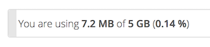

Lagerkvote
Din Nextcloud-administrator kan sætte en lagerkvote for din konto. Åbn siden med dine personlige indstillinger for at se din kvote, og hvor meget lagerplads du har brugt.

Det kan være nyttigt at forstå, hvordan din kvote beregnes.
Metadata som miniaturer, midlertidige filer, cache og krypteringsnøgler kan bruge diskplads uden at tælle med i din brugerkvote. Nogle apps, f.eks. Kalender og Kontakter, gemmer data i databasen. De data tæller ikke med i kvoten for fillagring.
Når andre brugere deler filer med dig, tæller de delte filer normalt med i den oprindelige ejers kvote. Når du deler en mappe og lader andre brugere eller grupper overføre eller redigere filer i den, tæller de filer med i din kvote. Når du videredeler filer, der er delt med dig, tæller videredelingen normalt fortsat med i den oprindelige ejers kvote.
Krypterede filer kan fylde mere fysisk lagerplads end ukrypterede. Kvoten beregnes ud fra den filstørrelse, som Nextclouds lagerlag oplyser.
Når appen Versioner er slået til, styres ældre versioner af filer separat fra den almindelige lagerkvote efter appens regler for opbevaring og lagerplads.
Hvis du opretter en offentlig deling via en URL og tillader overførsler, tæller de overførte filer med i din kvote.
Slettede filer og papirkurven
Filer og mapper i papirkurven tæller ikke med i din almindelige lagerkvote. Papirkurven har dog sin egen lagergrænse.
For konti med en kvote beregnes papirkurvens standardplads som 50 % af den plads, der er tilbage i kontoens kvote. Den beregnes, efter at kontoens aktive filer er talt med. Den er altså ikke 50 % af den samlede kvote.
For konti uden kvote beregnes papirkurvens standardgrænse i stedet ud fra den ledige plads i filsystemet. En administrator kan tilsidesætte den beregnede standard ved at sætte en størrelse for papirkurven for alle eller for den enkelte konto.
Din administrator kan også sætte minimale og maksimale opbevaringsperioder for papirkurven eller slå automatisk udløb fra. Se afsnittet om slettede filer i dokumentationen til administration for at få flere oplysninger.